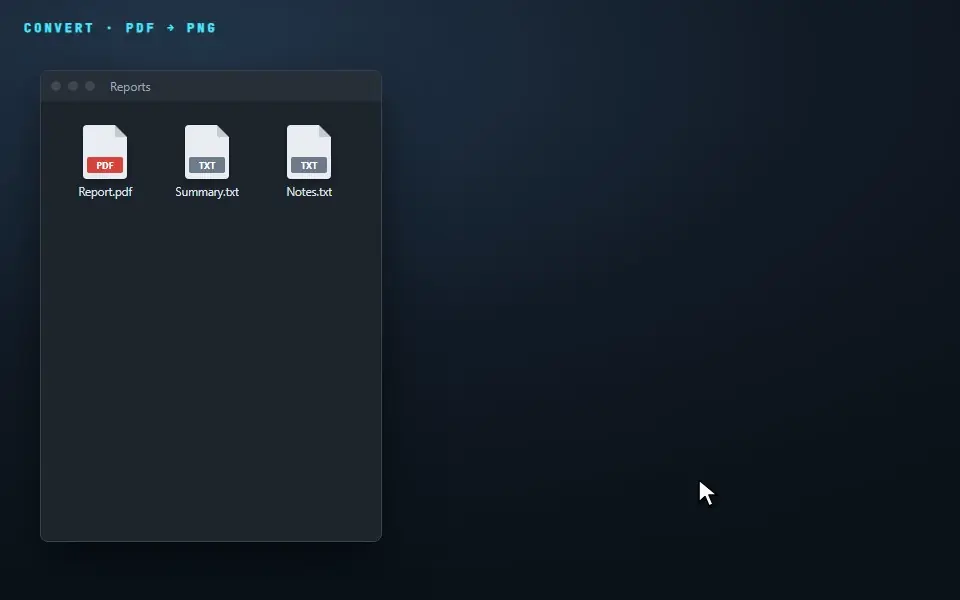
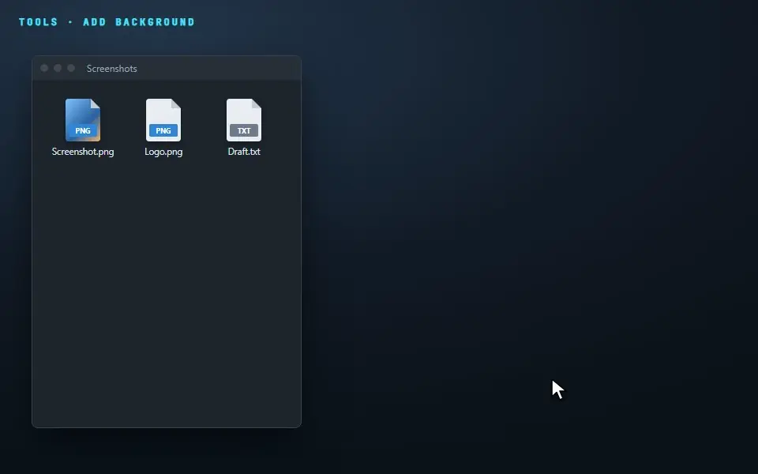
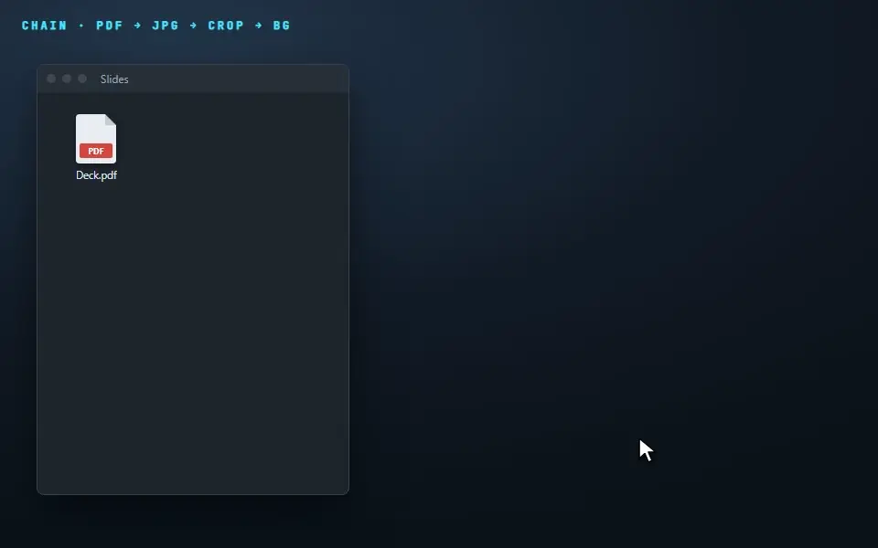
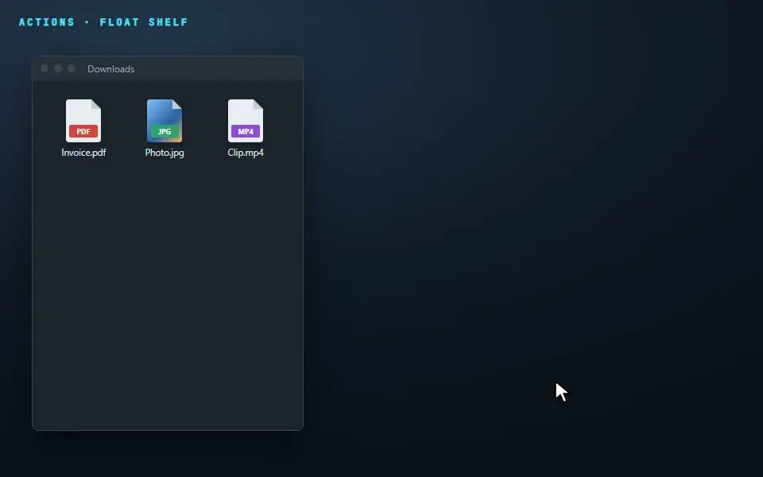
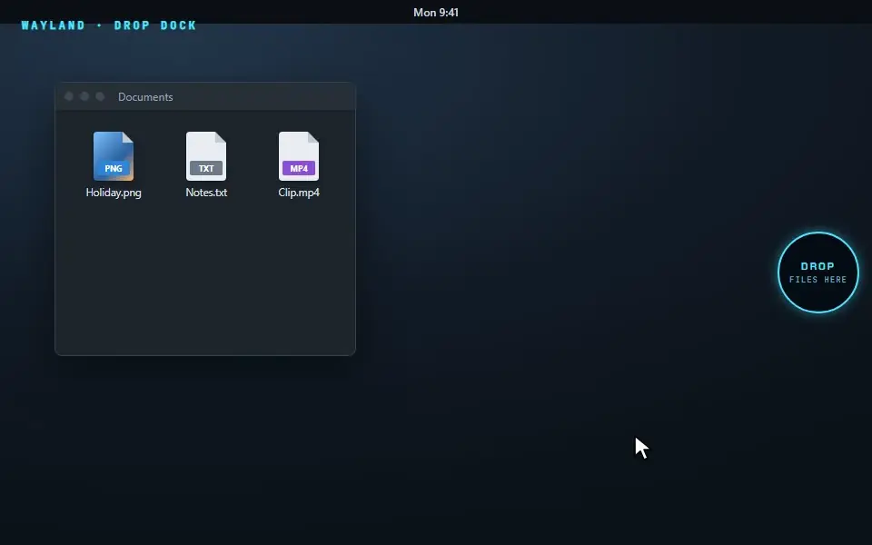

Shift Convert
Every format you actually use
Images to JPG, PNG, WebP, AVIF, TIFF and PDF. PDFs to 300 DPI images, DOCX, text or Markdown. Video, audio, documents, slides, spreadsheets, subtitles and archives.
Free · Open source · Windows & Linux
Convert and edit images, PDFs, video, audio and documents without opening an app. Everything runs on your computer, and your original is never touched.
01 — How it works
Pick up a file, several, or a folder in your file manager, as if you were moving it.
Shift converts, Ctrl edits, Alt acts. Just tap it; you don't need to hold it.
Or press 1–9. The result appears next to the original: photo.jpg → photo Cropped.jpg.




02 — Features
Shift Convert
Images to JPG, PNG, WebP, AVIF, TIFF and PDF. PDFs to 300 DPI images, DOCX, text or Markdown. Video, audio, documents, slides, spreadsheets, subtitles and archives.
Ctrl Tools
Compress to a target size, crop, annotate, add a background, trim video, normalise audio, merge PDFs.
Alt Actions
Share, copy, move, copy the path, open a terminal, or park files on the Float shelf.
Private
No account and no upload. Even the AI tools (remove background, blur faces, copy text) run locally.
Safe
Results are always new files. Names never clash, and Undo sends the last result to the Recycle Bin.
Yours
Save a chain as one segment. Drop files in a watched folder to process them automatically. Wrap ImageMagick, FFmpeg or any script in a short text file, and it shows up on the ring.
03 — Install
Download Metamorphosis_…_x64-setup.exe (or the .msi) from the latest release and run it. It lives in your tray.
Windows 10 22H2 or later, 64-bit. The installer isn't code-signed yet: if SmartScreen appears, choose More info → Run anyway. Want a portable copy? Turn on portable mode in Settings.
sudo apt install ./Metamorphosis_*_amd64.debchmod +x Metamorphosis_*_amd64.AppImage
./Metamorphosis_*_amd64.AppImageBoth files are on the releases page. Flathub and AUR packages are being prepared. On X11 you get the full experience; on Wayland, see below.
04 — Wayland
Wayland doesn't let apps watch your keyboard while you drag in another window. So on Wayland you get a drop dock: a small circle at the screen edge. Drag files onto it and it opens into the ring. Hover Convert, Tools or Actions to switch.

05 — FAQ
No. Every conversion and tool runs on your computer. Metamorphosis only goes online when you choose to install an optional component, such as the AI models or FFmpeg.
No. Results are new files saved next to the original, like photo Cropped.jpg. If a name is taken, a number is added. Only the Move action touches originals, and only because you asked it to.
Yes. Each ring's key can be changed in Settings, along with the accent colour, animations, language, naming and which segments appear.
Some features need an extra download the first time: local AI models, FFmpeg for video and audio, LibreOffice for Office files. It happens once, so the main install stays small.
Yes. Right-click files in Explorer, Dolphin, Nautilus, Nemo or Thunar, press Ctrl+Alt+M on a selection in Explorer, or use the morph command line.
No. Metamorphosis is an independent open-source project inspired by the drag-to-convert idea of Tangerine for Mac, and isn't affiliated with it. If you're on a Mac, try Tangerine.
Nothing. It's free and open source, with no limits.